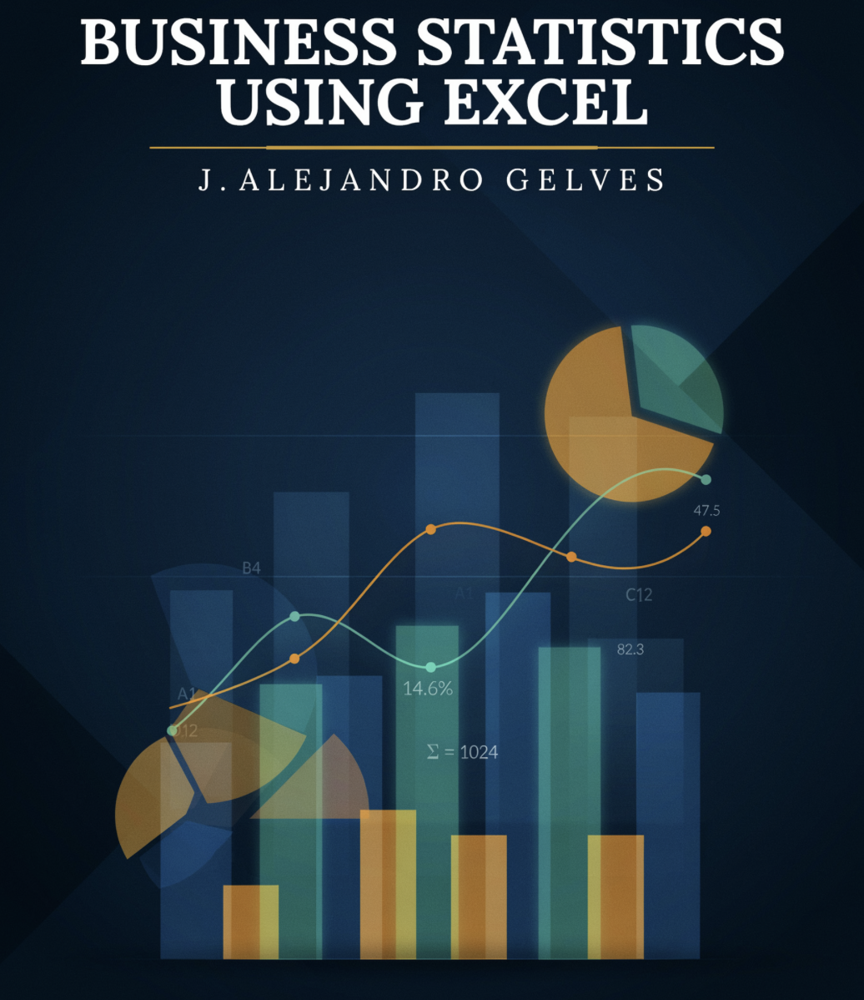

Business Statistics
Introduction

“Whatever you would make habitual, practice it; and if you would not make a thing habitual, do not practice it, but accustom yourself to something else.” – Epictetus
This course companion is designed to build your mastery of statistics and its real-world applications in Excel through consistent, deliberate practice. Each chapter opens with key concepts to guide your learning, followed by carefully crafted problems that reinforce these ideas through hands-on work. The material is challenging but approachable — steady effort and attention to detail will take you far.
This book is also the product of many helping hands. In particular, I would like to extend my sincere thanks to my business statistics students — particularly Haipei Liu, Addison Alvine, and Sara Blair — for their invaluable feedback and thoughtful reviews. Any remaining errors are entirely my own.
Why Excel?
Excel is the common language of business. From finance and accounting to marketing and operations, professionals across every industry rely on it daily to organize data, uncover patterns, and communicate results.
Unlike specialized statistical software, Excel is accessible, widely available, and immediately applicable — skills you build here will be useful from your very first internship.
Excel also provides a powerful and comprehensive set of tools for data analysis, including:
- Descriptive statistics
- Data visualization
- Pivot tables
- Probability functions
- Regression and forecasting
- Statistical inference and hypothesis testing
Throughout this book, you will learn how to perform each statistical technique directly in Excel. Screenshots, step-by-step instructions, and downloadable datasets will guide you through the process. No programming experience is required!
Excel in the Era of AI?
Proficiency in Excel remains a foundational skill in business, even in an era increasingly shaped by artificial intelligence. While AI tools can automate analysis and generate insights at speed, they are most effective in the hands of someone who understands the underlying data and logic — and Excel builds exactly that understanding. Spreadsheets are the universal language of business: from financial modeling and budgeting to operations and marketing, nearly every professional role involves working with data in Excel at some level. Learning Excel also develops broader analytical habits — organizing information clearly, checking assumptions, and thinking systematically about problems — that transfer directly to working with AI tools and interpreting their outputs critically. In short, Excel is not made obsolete by AI; it is the foundation that makes AI more useful.
Roadmap
This book follows a deliberate sequence designed to build your skills progressively. We begin with Descriptive Statistics, where you will learn to summarize, visualize, and explore data in Excel. Here you will develop the foundation of all statistical thinking. Next, we move to Regression, giving you a powerful tool for identifying relationships between variables and making predictions. With these analytical skills in hand, we then develop your understanding of Probability, which provides the theoretical backbone for drawing conclusions from data. We then bring everything together in Inference, where you will learn to make rigorous, evidence-based decisions from samples. Finally, the Regression and Inference chapter combines both threads, showing how to judge the reliability of a regression model. Each stage builds on the last, so that by the end you will have a complete statistical toolkit.
If you are new to spreadsheets — or simply want a quick reference — start with the Excel Basics chapter at the end of the book. It reviews how Excel organizes data (cells, ranges, worksheets, and the Data Analysis ToolPak) and collects every function used throughout the book into a single dictionary you can return to whenever you need it.
How to Use This Book
Each chapter follows the same rhythm. It opens with the key concepts and formulas, illustrated by worked examples. A section then shows you how to carry out each technique in Excel, step by step, followed by an Excel Function Summary that lists the functions introduced in that chapter. Many chapters also include a downloadable dataset so you can follow along, and each one closes with a set of Exercises. The exercises come with hidden answers — try each problem on your own first, then click to reveal the solution and check your work.
How do I get Excel?
All William & Mary students can download Office 365, which includes Excel, at: https://software.wm.edu/office_365_d1/